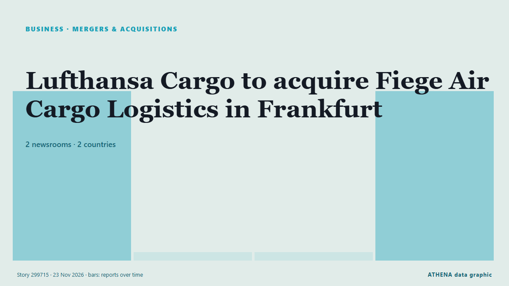

Entreprises et investissement
SponsoriséPrésenté par  Cybernetics and Artificial Intelligence Lab Welcome to the Cybernetics and Artificial Intelligence Laboratory, established at the Department of Business Administration of the National and Kapodistrian University of Athens. The lab is headed by Professor Dimitrios Thomakos. The lab aims to do research that can be published in top venues. Our research uses tools and methods of Artificial Intelligence, and lies in the following areas: - Forecasting - Decision making - Cyber security - Finance We are always looking forward to collaborating with exceptional students!
Cybernetics and Artificial Intelligence Lab Welcome to the Cybernetics and Artificial Intelligence Laboratory, established at the Department of Business Administration of the National and Kapodistrian University of Athens. The lab is headed by Professor Dimitrios Thomakos. The lab aims to do research that can be published in top venues. Our research uses tools and methods of Artificial Intelligence, and lies in the following areas: - Forecasting - Decision making - Cyber security - Finance We are always looking forward to collaborating with exceptional students!
Les titres sont affichés en anglais, tels que publiés.

Fusions et acquisitionsLufthansa Cargo to acquire Fiege Air Cargo Logistics in Frankfurt
Lufthansa Cargo has signed an agreement to acquire Fiege Air Cargo Logistics (FACL), bringing cargo handling operations at its Frankfurt hub under direct management. de Container News
| 11 nov. | 102 |
|---|---|
| 12 nov. | 96 |
| 13 nov. | 63 |
| 14 nov. | 38 |
| 15 nov. | 36 |
| 16 nov. | 99 |
| 17 nov. | 88 |
| 18 nov. | 87 |
| 19 nov. | 84 |
| 20 nov. | 64 |
| 21 nov. | 37 |
| 22 nov. | 33 |
| 23 nov. | 43 |
| 24 nov. | 0 |
Lilly buys Huntington's startup LoQus23 for up to $725M
Eli Lilly is headed into Thanksgiving week with an extension to its 2026 shopping bonanza, this time by snapping up a UK-based Huntington's disease biotech set to enter the clinic in the coming… de Endpoints News
FedEx-led consortium completes acquisition of InPost
A consortium comprising Advent International, FedEx, A&R Investments and PPF Group has completed its acquisition of European parcel delivery company InPost. de Container News
Russia's Wildberries CEO Steps Down Days After EU Sanctions, Media Report
Nov 21 - Tatyana Kim, the head of Russia's largest online retailer Wildberries, has stepped down, Russian media reported on Saturday, days after the European Union added her to its Russia sanctions… de The Straits Times
Honda, Toyota recall 1.6 million vehicles over Takata airbag rupture risk
WASHINGTON: Honda and Toyota Motor said on Friday they are recalling about 1.6 million cars, trucks and SUVs over a risk that Takata airbag inflators could rupture.Honda and Toyota... de Oman Observer
Saudi Arabia clarifies scope and timeline for 15% minimum tax
Details on eligibility thresholds, scope, and how the framework aligns with global tax standards have been revealed. de Arabian Business
Pakistan, Portugal agree to establish joint ministerial commission to boost bilateral trade, investment
Pakistan and Portugal have agreed to strengthen bilateral cooperation in trade, investment, agriculture, renewable energy, technology and labour mobility, as the two countries seek to expand economic… de Business Recorder
Capita boss steps down after Civil Service pension scheme failures
Capita has announced the departure of its boss as he admitted the company has “not delivered” for members of the UK’s Civil Service pension scheme. de Yorkshire Post
India vs New Zealand 1st Test: Six talking points from Wellington as Bumrah, Rahul and Pant shine
India dominated the first Test against New Zealand in Wellington but settled for a draw. de Sportstar
Uzbekistan rises 31 places in UN E-Government Development Index
Uzbekistan ranked 32nd out of 194 countries in the 2026 UN E-Government Development Index. de Gazeta.uz (English)
Schettino out of jail after getting time off term for good behaviour
(ANSA) - ROME, 23 NOV - Former Costa Concordia captain Francesco Schettino is out of jail after getting time off for good behaviour from his 16-year term for being to blame for the 2012 cruise-ship… de ANSA English
‘She was frustrated’: Anupam Kher recalls Deepika Padukone’s maid act in acting class
Dubai: Bollywood star Deepika Padukone was once left frustrated and almost in tears during an acting exercise, veteran actor and former tutor Anupam Kher has recalled. de Gulf News
Shashi Tharoor tries GTA 6 for the first time, says ‘Grand theft, yeah, but auto?’
Shashi Tharoor admitted that neither the setting nor the characters in GTA 6 appealed to him. de Hindustan Times
Calls grow for Japan's education minister to step down over scandals
Calls grew Sunday for education minister Yoshihiro Seki to step down over revelations that senior bureaucrats had given presentations. de Mainichi (English)
CJI Surya Kant recuses himself from hearing plea related to Supertech projects
New Delhi: Chief Justice of India Surya Kant on Monday recused himself from hearing a plea related to Supertech insolvency and homebuyers' dispute, observing that one of the applicants was personally… de Deccan Herald
Kalshi's 30-year-old founder built $40bn giant; now faces US gambling law battle
Luana Lopes Lara, 30, became the world's youngest self-made female billionaire after co-founding Kalshi with Tarek Mansour in 2021. de Times of India (World)
ExxonMobil and partners approve $4bn investment in Angola’s Block 15
ExxonMobil and its partners in Angola's Block 15 have agreed on a final investment decision (FID) valued at approximately $4bn to redevelop the Kizomba A and Kizomba B fields, as well as to develop… de Offshore Technology
Gerard Peters pleads not guilty to role in $1.8m investment fraud
Gerard Peters has returned to New Zealand after eight years overseas. de New Zealand Herald
Turkey freezes assets of 108 people in fund scandal: report
Prosecutors investigating Turkey's investment fund crisis have frozen the assets of 108 people who each earned over $2 million in profits through trading. de The New Arab
GTA 6 shatters entertainment industry records: The Washington Post
In an unprecedented achievement for the global entertainment industry, The Washington Post reported that Grand Theft Auto 6 – the long-awaited installment of the GTA video game franchise – has… de Egypt Independent
DHL Supply Chain sees 12% year-on-year sustainable revenue growth as companies transform their global supply chains
Asia Pacific records 9.9% year-on-year revenue growth in Q3 2026 and is expected to account for approximately 20% of 2026 Total Contract Value New investments across Australia, India, Japan, the… de Laotian Times
Wonder explores sale of delivery service Grubhub: report
Wonder, started by e-commerce entrepreneur Marc Lore, acquired Grubhub in 2024 for US$150 million. de The Business Times
More than 2,300 Indian Sikh pilgrims arrive in Pakistan to mark Guru Nanak's birthday
LAHORE: Over 2,300 Indian Sikh pilgrims arrived in Pakistan through the Wagah Border on Sunday to attend celebrations marking the 557th birth anniversary of Baba Guru Nanak Dev Ji, the founder of… de Dawn
Sanofi rumoured to be eyeing high-profile Insmed takeover
Insmed’s shares spiked 20% following these rumours, while Sanofi’s stock dropped 2%, despite analysts backing the potential deal rationale. de Pharmaceutical Technology
Health Committee chair condemns 'effort to discredit' CHU chief after she raised staffing concerns
‘We have to create a culture in the health service where clinical leaders feel free to speak up when they see foreseeable patient safety risks,’ said Pádraig Rice. de TheJournal.ie
Defense, AI, High Tech: A Delicate Balance Between Armies and Industry
Defence, AI, high tech: a delicate balance between armies and industry. de Gulf News
World Children’s Day: UNICEF urges greater investment in children
Tehran, IRNA – Iran’s Institute for the Intellectual Development of Children and Young Adults (IIDCYA), better known as Kanoon, has called on the United Nations International Children’s Emergency… de IRNA (English)
Greek Gas Reserves Could Deliver Greater Prosperity for Citizens
Greece’s commercially viable hydrocarbon reserves could improve living standards and strengthen energy security as global companies join offshore exploration. de Greek City Times
Authorities review tourism challenges and plans for industry growth in 2027
Vietnam’s tourism sector can tap into the country's growing silver economy by developing travel products tailored to older adults, a market estimated at around 16 million people but with relatively… de Tuoi Tre News
Hazlewood: I was never close with Khawaja but we were both professional
Hazlewood suggested his limited interaction with Khawaja outside the team environment may explain why he was unaware of any discussions. de Sportstar
UN Security Council deadlocked over Guterres’ successor
With just six weeks remaining in Antonio Guterres' term, the deadlock raises the risk of the UN being left without a successor when he steps down. de Free Malaysia Today
GTA VI Earns Record $3.79 Billion Within 24 Hours
GTA 6 generates a record $3.79 billion in first-day sales, surpassing its predecessor and setting a new entertainment benchmark as excitement reaches Kurdistan. de Kurdistan24 (English)
Canada joins NATO innovation fund, promises ‘business as usual’ with US
But the investment is a pointed reaction to the Trump administration’s dwindling cooperation with its northern ally. de Defense One
Mohamad meets BN, PN reps to resolve MB-related issues
Barisan Nasional deputy chairman Mohamad Hasan also says any matter concerning the state administration must be carried out in accordance with its constitution and rule of law. de Free Malaysia Today